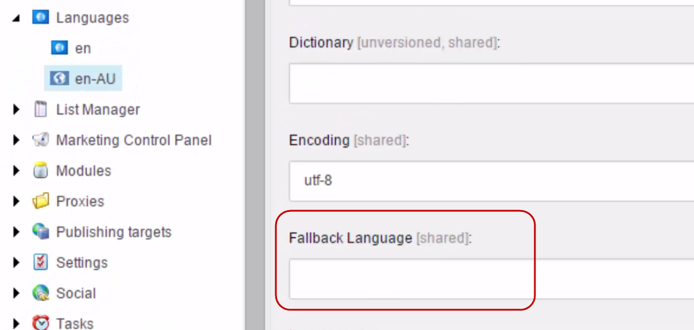
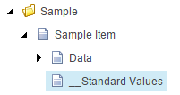
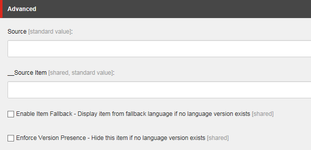
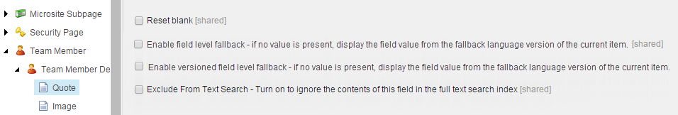

Enable and set up language fallback
Enable language fallback on site level and on item or field level.
To use the language fallback functionality, you enable either item-level or field-level fallback on the relevant sites and on the relevant items, fields, or templates. In addition, on the relevant language definition items you specify the fallback language that determines which language version of an item or field that you want displayed when there is no version available in the current language.
Note
You should not use both item- and field-level fallback on the same item because it makes it difficult to maintain an overview of the versions that different items and fields fall back to.
This topic outlines how to:
To be able to use language fallback in your Sitecore solution, you have to enable it for each relevant site.
To enable site-level language fallback:
Open
\App_Config\Sitecore\Sitecore.Sites.configand set the following attributes to true:enableItemLanguageFallbackenableFieldLanguageFallback
You must enable the attributes on the shell and on each of the relevant websites.
<sites> <site name="shell"> <patch:attribute name="enableItemLanguageFallback">true</patch:attribute> <patch:attribute name="enableFieldLanguageFallback">true</patch:attribute> </site> <site name="website"> <patch:attribute name="enableItemLanguageFallback">true</patch:attribute> <patch:attribute name="enableFieldLanguageFallback">true</patch:attribute> </site> </sites>
Note
Do not make changes directly to the configuration files. Instead, you must create a patch file that performs the required changes during run time.
In multisite environments where you only want to enable language fallback on a subset of the websites, you need to create a specific shell site for each website where you want the language fallback feature enabled.
For each language in your Sitecore solution that you want to use for language fallback, you must specify the language that you want it to fall back to. The fallback language specified on a language definition item applies to all the fields and items that have language fallback enabled.
To specify the fallback language for a language definition item:
In the Content Editor, in the content tree, navigate to and click the language definition item that you want to specify the fallback language for. The language definition items are located in sitecore/system/Languages.
Note
To add more languages to your Sitecore installation, in the Control Panel, in the Localization section, click Add a new language and follow the steps in the wizard.
In the Data section, in the Fallback Language field, enter the name of the relevant language, for example, en-AU.
 Save your changes.
Note
You can also set up a chain of language fallback. For example, you can specify the language en-NZ to fall back to en-AU and en-AU to fall back to en. If the version in en-AU does not exist for a particular item, then the version in en-NZ falls back to the version in en.
On all the individual items or item templates where you want to use language fallback, you must enable item-level fallback.
To enable item-level fallback:
In the content tree, navigate to the relevant item.
To enable language fallback on a template, navigate to the relevant template and click the _Standard Values item.
 On the Content tab, in the Advanced section, select Enable Item Fallback.
 Note
If you do not see the Advanced section, on the ribbon, on the View tab, select Standard fields.
Save your changes.
You can enable field-level fallback on a field template on every relevant field definition item.
Note
To enable field-level fallback can be a very tedious task, so to automate this process and perform a batch update of the field-level fallback settings, you can use the Sitecore Powershell Extensions module.
To enable field-level fallback:
In the content tree, navigate to the relevant template and click the field definition item that you want to enable field-level fallback for.
 In the Data section of the item, select:
Enable field level fallback – to enable language fallback for all the language versions of the current field. This applies to all the currently available language versions of the field and any new language versions that you create.
Enable versioned field level fallback – to enable language fallback for only the current language version of the field.
To allow different fallback settings for the same field in different languages (versioned fallback), in the
Sitecore.LanguageFallback.configfile, you must set the configuration settingLanguageFieldFallback.AllowVaryFallbackSettingsPerLanguageto true. However, this degrades performance considerably.
Note
Some field values might be inherited from another template in which case you must enable them on the individual templates as well.
Save your changes.